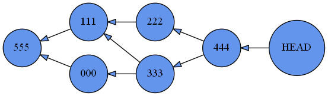

אני מסתבך עם עדכון הפקודה graph לאחר שכתבתי את merge.
אני לא מצליח למצוא דרך לחלץ את כל ה-commit-ים בדרך מ-HEAD עד ה-commit שאין לו הורה (None), במקרה שבו יש ל-commit מסוים שני parents, ולאחד מהם גם כן יש שני parents.
לדוגמה, ל-444 ו-333 יש שני parents. מקרה כזה בכלל אפשרי?

אני חושב שזה דורש רקורסיה, ניסיתי לממש למרות שלא למדנו ואני לא מצליח.
אשמח להכוונה
devorack
לא נראה לי שחייבים רקורסיה. אם אתה יכול למצוא את אחד ההורים אז באופן דומה אתה יכול למצוא יותר מהורה אחד. שים לב למבנה הקובץ ממנו אתה מנסה לחלץ את הנתונים
Alon.B.A
לא שמרתי את כל הנתונים ביחד בקובץ מסוים. אני מנסה כל פעם להוציא מה- commit_id.txt האחרון את ה-parent שלו, ואז את ה-parent של ה-parent וכך הלאה ולהרכיב מזה מילון.
הבעיה היא לא בהוצאת שני הורים מה-commit_id.txt, אלא ב"להמשיך" לחפש את ההורה של כל הורה במקרה של 2 הורים, ולהוסיף את הכל למילון.
devorack
צודק . גם אני עשיתי כך בהתחלה לפני שהגעתי למרג’. שיניתי…
Yam
מקרה כזה בהחלט אפשרי. הוא אולי קצת מורכב, אבל אפשר לממש אותו עם ובלי רקורסיה.
devorack
בכל מקרה הרבה מקרים של רקורסיה אפשר להחליף ב while נראה לי , אם ממש רוצים להמנע מרקורסיה
(האם ההבדל ביניהם סמנטי בלבד?)
Yam
לא בהכרח, רקורסיה הרבה פעמים תתפוס יותר מקום בזיכרון כי כל קריאה לפונקציה היא “יקרה” (הקצאת עוד scope של משתנים בזיכרון)
devorack
אז לפי זה בכלל עדיף לולאה על פני רקורסיה. טיפה יותר פורמלי ולוקח עוד כמה שורות…
Yam
לא בדיוק, הרבה פעמים רקורסיה מפרמלת נוסחת נסיגה מתמטית בצורה הרבה יותר נעימה לעין
def fibonacci(x):
if x < 2:
return 1
return fibonacci(x - 1) + fibonacci(x - 2)
Alon.B.A
אשמח להכוונה כלשהי כי אני תקוע על זה מספר שעות ללא כל התקדמות.
בינתיים אני מחלץ parent מ-commit_id.txt ש-HEAD מצביע עליו, ואם הוא רשימה (כלומר יש שני הורים) אני לוקח רק אחד מההורים (אם לא אני פשוט מגדיר שהוא ה-commit_id ומחלץ את ה-parent שלו וכך הלאה). כל זה תחת לולאת while כך שהלולאה תפסיק כאשר parent = None.
מה אני עושה עם כל ההורים שלא התייחסתי אליהם כאשר בחרתי רק הורה אחד?
חשבתי להוסיף אותם לרשימה ואז לחפש את ההורים של כל אחד מהם אבל אז שוב אני בלולאה אין סופית, מה אם לאחד מהם גם כן יש 2 הורים…
לייק 1
Yam
יהיה לי קשה לעזור כי זה סופר תלוי במימוש שלך.
אני ממליץ לך לחפש על דגים באינטרנט (DAG - Directed Acyclic Graph, גרף מכוון ולא מעגלי) וכנראה שתמצא מספיק חומרים שיתנו לך כיוון
לייק 1
Alon.B.A
בינתיים בכל האתרים שקראתי על DAG מבנה הנתונים כבר היה נתון (למשל פה, פה ופה), והבעיה שלי היא בדיוק בבנייה של המילון שאעביר ל-Digraph.
באחרון יש קוד למציאת נתיב בין שני nodes, ניסיתי לחקות אותו כדי לבודד את הנתיב מ-HEAD ל-None (נגיד אם יש לי מילון שכולל את כל ההורים של כל ה-commit-ים) אבל גם זה לא הצליח למצוא את כל ההורים (בכל פעם שהיו שניים הוא לקח רק אחד).
mbrodsky
גם אני נתקעתי בזה. עבדתי באותה שיטה שבה אלון עבד (לולאת וויל) רק שלא בחרתי הורה אחד במקרה שבו היו שני הורים אלא פשוט הוספתי את שניהם לרשימה. זה כמובן יוצר כפילויות (העתקתי רשימה של קומיטים מקוצרים) שהפונקציה מפיקה וניתן לראות שחלקם מן הסתם חוזרים על עצמם. אני מנסה להבין אם יש דרך לחלץ את המבנה של הגרף מתוך המיקומים היחסיים שלהם ברשימה. אולי לעצב את הלולאה כך שהיא תפיק רשימה מקוננת? האם זה מבנה מידע שיכול להוביל לכיוון הנכון?
בימים האחרונים שיפרתי את הקוד שכתבתי למציאת ההורים ונראה שבינתיים זה עובד.
בנוגע למבנה מידע שתעביר ליצירת הגרף, מציע לך ליצור מילון שבו כל מפתח הוא commit_id והערך שלו הוא רשימת ההורים (גם אם יש הורה אחד שיהיה ברשימה, לי זה פישט את העניינים). היה מאוד מאתגר ליצור את המילון, אבל די פשוט ליצור את הגרף ממנו.
2 לייקים
mbrodsky
כן, נראה שמילון הוא המבנה הנכון. אין לי כמובן סיכוי להגיש בזמן, אבל זה היה ברור לי כבר לפני שלושה ימים. בכל מקרה אמשיך לנסות.
לייק 1
aviadamar
כן גם אני עשיתי בשיטה הזו והיצירה של הגרף אחרי זה הייתה ממש קלה